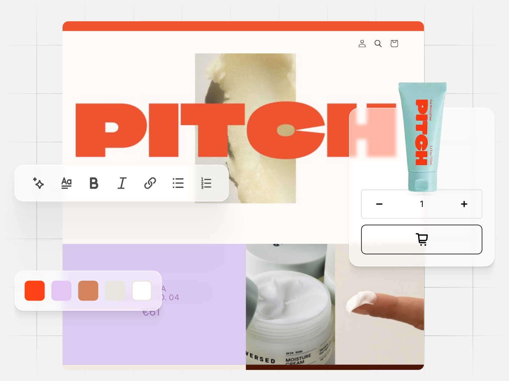
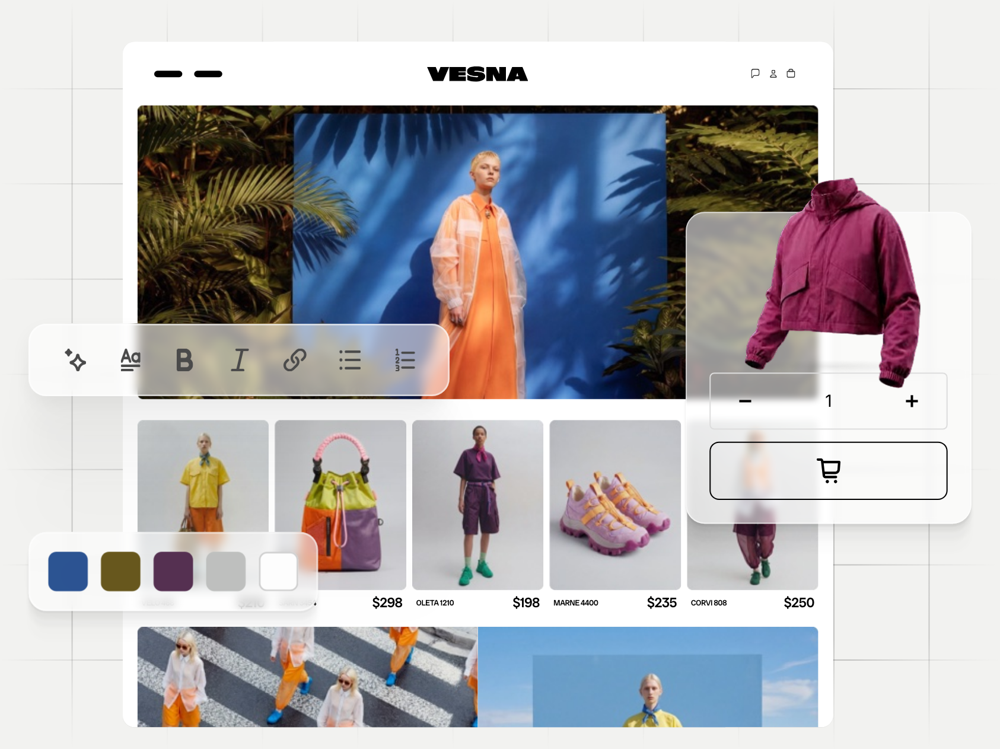
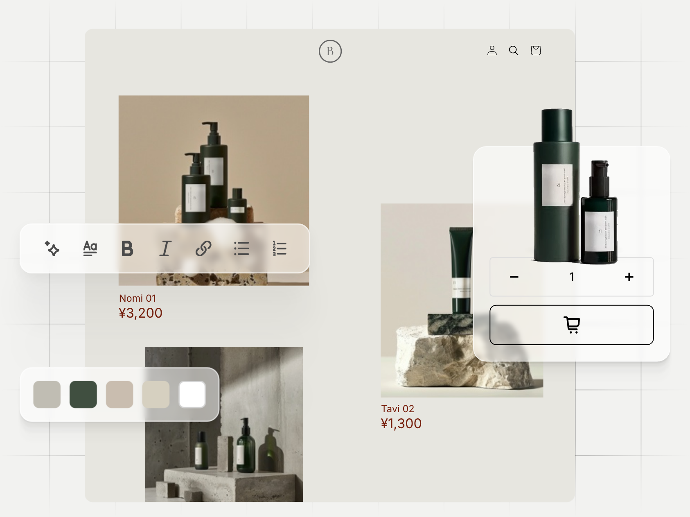

One still per website, for a template page that cannot carry the animation. Each is the frame at which that website is finished building and still fully on screen — not its first frame, which is the empty skeleton the build starts from. Click a still to open it at full size.


